Wallet Recovery¶
Long-time users of cryptocurrency sometimes find old wallet files on USB drives or cloud storage that they have forgotten about. Others may have a backup, but can’t remember the software they used to create it, or have forgotten the password. Other users may have an old version of Dash Core that no longer works because the network has upgraded. This documentation is intended to help these users restore access to their funds.
Determining the backup format¶
The first step is to determine the format of your backup. In most cases, this will either be a file, probably named wallet.dat, or a phrase of words. In some cases, you may have stored the private key for a Dash address directly. The following list shows the possibilities and methods to restore your wallet in order of probability.
Backup is stored in an older version of Dash Core that no longer works
Follow instructions for restoring wallet files using Dash Core
Backup is a file
If file name is similar to wallet.dat, try to restore using Dash Core
If file name is similar to dash-wallet-backup or includes the word ‘mobile’, try to restore using Dash Wallet for Android
Backup is a phrase of words
If 12 words long, try to restore using Dash Electrum wallet or Dash wallet for Android or iOS, depending what you used to create the backup
If 13 words long, try to restore using Dash Electrum wallet
If 12, 18 or 24 or 25 words long, try to restore with the hardware wallet you used to create the recovery phrase
Backup is a long string of random characters or a QR code
If 34 characters long and starting with X, this is a public address and cannot be used to restore access to lost funds. You need the private key.
If 51 characters long and starting with 7, this is a private key in WIF, import using Dash Core
If 58 characters long and starting with 6P, this is a BIP38 encrypted private key, decrypt using paper wallet then import using Dash Core
Once you have determined your backup format, follow the links to view the restore guide for that format.
File Backups¶
Dash Core¶
One of the most common wallet backup formats is a wallet.dat file from Dash Core wallet. Before you begin, make absolutely sure that you have a copy of this file stored somewhere safe in case the restore process accidentally corrupts your wallet file! In most cases, wallet.dat backups will also be protected by a password, which you will need to know to regain access to your Dash funds. If you already have Dash Core installed, first ensure it has been updated to the latest version by clicking Help > About Dash Core. Compare this with the latest available version of Dash Core on the website as follows:
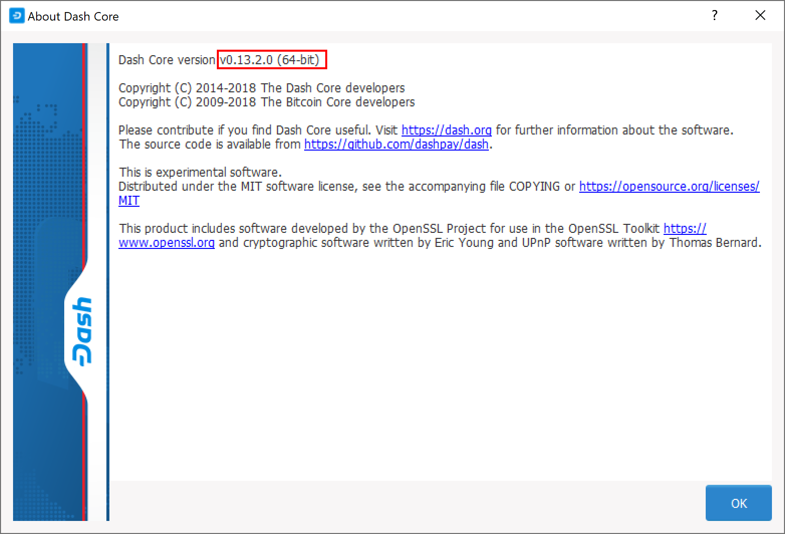{kind=link}
{kind=link}
Comparing the installed version of Dash Core with the latest version available on the website¶
Update Dash Core to the latest version according to the installation instructions. If you have only a wallet file and no existing installation of Dash Core, simply install Dash Core according to the installation instructions and start it once to create the DashCore folder. Then close Dash Core and copy the wallet.dat file you want to restore to the DashCore folder in the location specified below, replacing or renaming the existing file.
Platform |
Path to data folder |
How to navigate |
|---|---|---|
Linux |
~/ |
Go to your home folder and press Ctrl+H to show hidden files, then open |
macOS |
~/Library/Application Support/ |
Press Shift + Command + G, type |
Windows |
%APPDATA% |
Press Windows Key + R and type |
If your existing version of Dash Core is older than v0.12.1.x, you may
need to rename your data folder from Dash to DashCore.
To repair a broken installation, navigate to the DashCore folder and delete all .log and .dat files except wallet.dat. The following files can be safely deleted:
banlist.dat
budget.dat
db.log
debug.log
fee_estimates.dat
governance.dat
mncache.dat
mnpayments.dat
netfulfilled.dat
peers.dat
Leave .conf files and the folders (such as backups, blocks,
chainstate, etc.) intact, since they will help you get started
faster by providing a copy of the blockchain and your settings.
Now open Dash Core and wait for blockchain synchronization to complete. Your wallet will be restored/upgraded and all balances should be displayed. You should ensure you have the correct password by trying to unlock your wallet from Settings > Unlock Wallet to make sure you can actually create transactions using your balances. If you have any problems with your balance not appearing, try to force a rescan of the blockchain by going to Tools > Wallet Repair and selecting Rescan blockchain files. Rebuild index may also help. Dash Core will restart and perform a full scan of the blockchain.
{kind=link}
{kind=link}
At this stage, recovery is complete and you should make another backup using File > Backup Wallet or following the instructions here. If you have any further problems, try asking on the forum, Reddit or the #dash-support-desk channel at Dash Nation Discord.
Dash Android¶
Similar to Dash Core wallet, Dash Wallet for Android can back up your
wallet to a file. To restore this wallet on another device, simply copy
the backup file to the /Downloads folder of your device using either
a computer connected by USB or a file manager app on the device. Ensure
your Dash wallet is fully updated in the Play Store, then open Dash. If
you have an existing balance, either make another backup or transfer it
to an external address, because restoring a wallet will replace your
existing wallet!
Click the menu button in the top left corner, select Safety > Restore wallet and select the appropriate file from the list. Enter your password and click Restore. This may take some time, and your balance will be displayed when complete.
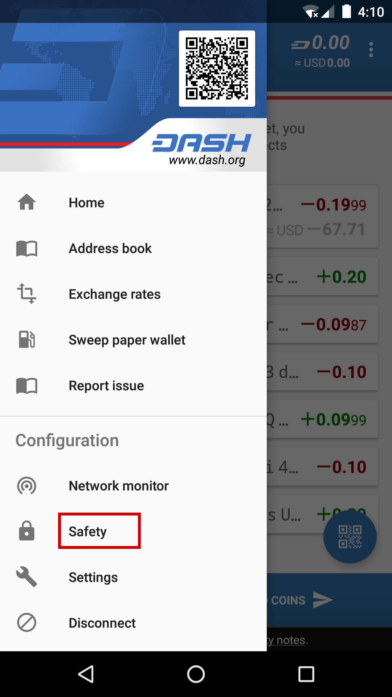 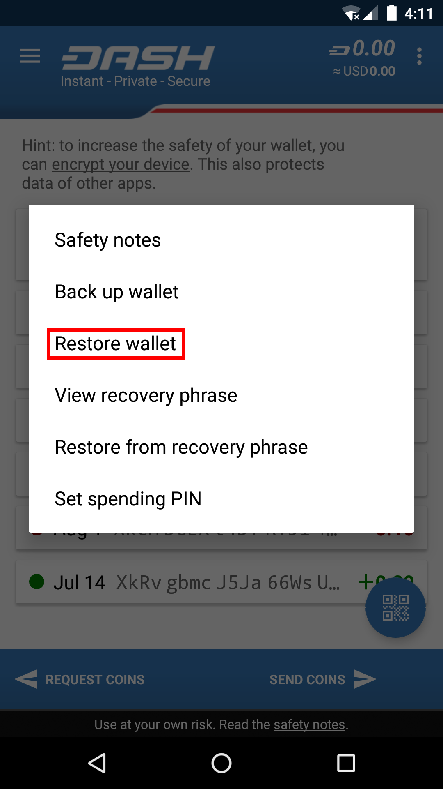 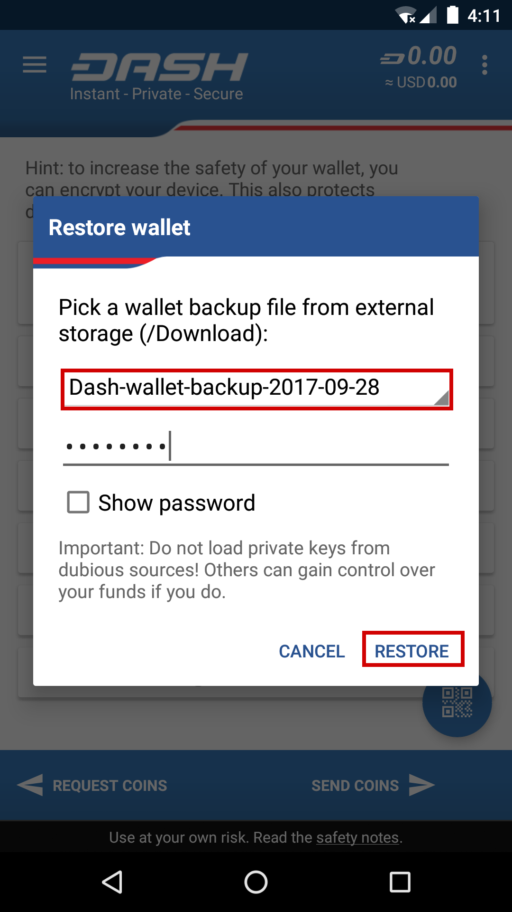{kind=link}
{kind=link}
{kind=link}
Restoring a file backup using Dash Wallet for Android
Recovery Phrases¶
If you have a 12-word phrase and feel certain your backup was made on an iOS or Android mobile device, follow these instructions.
12-word phrase on Android¶
Ensure your Dash wallet is fully updated in the Play Store, then open Dash. If you have an existing balance, either make another backup or transfer it to an external address, because restoring a wallet will replace your existing wallet! Click the menu button in the top left corner, select Safety > Restore from recovery phrase and enter your 12-word phrase.
{kind=link}
{kind=link}
Restoring a 12-word recovery phrase using Dash wallet for Android
12-word phrase on iOS¶
Ensure your Dash wallet is fully updated in the App Store, then open Dash. If this is the first time you are opening the app, you can enter your recovery phrase directly by selecting Recover wallet on the start screen. If you have an existing balance, either make another backup or transfer it to an external address, because restoring a wallet will replace your existing wallet!
Click the menu button in the top left corner, select Settings > Start/recover another wallet. Enter your current wallet recovery phrase, then the app will reset and you will see the option to Recover wallet again.
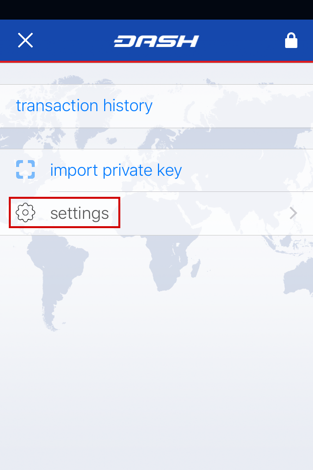 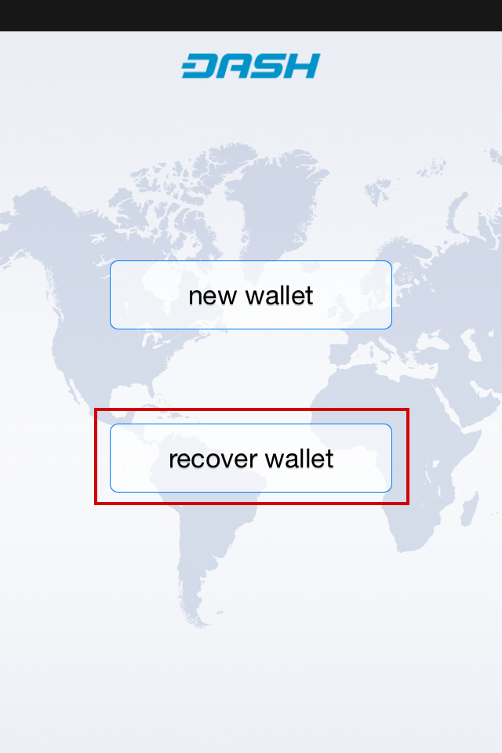 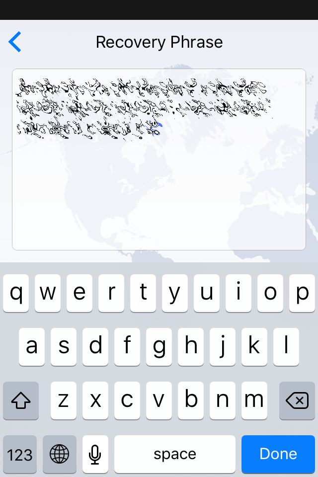{kind=link}
{kind=link}
{kind=link}
{kind=link}
{kind=link}
Restoring a 12-word recovery phrase using Dash wallet for iOS
12/13-word phrase on Dash Electrum¶
Ensure you are using the latest version of Dash Electrum according to the installation instructions here. Dash Electrum supports multiple simultaneous wallets, so you can safely restore to a new wallet file without losing your old wallet. Click File > New/Restore and enter a file name to store your new wallet. Then select I already have a seed and enter your 12/13-word recovery phrase. Enter a new password for your wallet and click Next to recover your addresses from the recovery phrase.
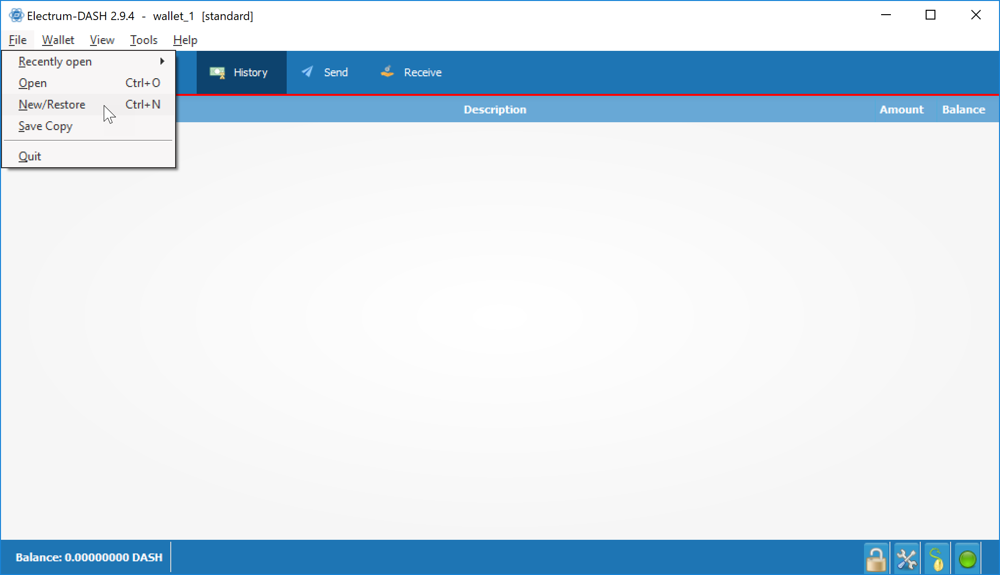{kind=link}
 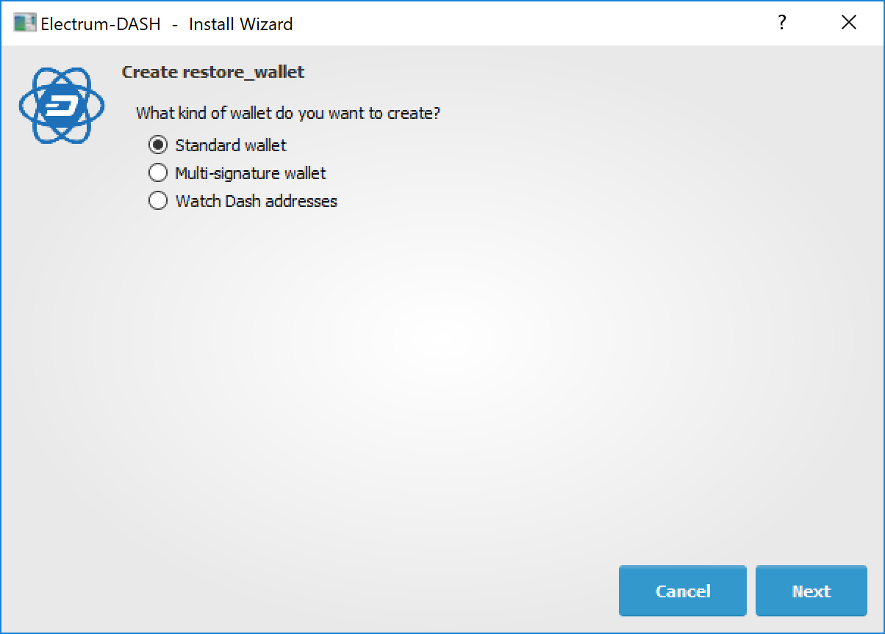
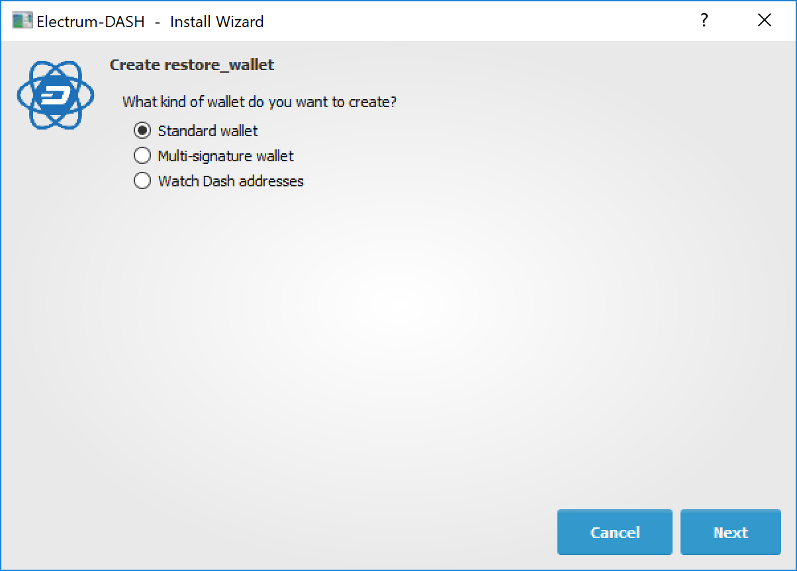
{kind=link}
{kind=link}
{kind=link}
{kind=link}
Restoring a 12-word recovery phrase using Dash Electrum
Hardware wallet recovery phrases¶
If your 12, 18 or 24-word recovery phrase was generated by a hardware wallet, follow these instructions:
Restoring an iOS wallet in Dash Electrum¶
You can use your Dash iOS recovery phrase with Dash Electrum to recover funds if you lose access to your iOS device for any reason. However, since the wallet derivation paths are not identical, the process only works in one direction, meaning it is not possible to restore a Dash Electrum wallet using the Dash iOS wallet. Also, because the import process uses an xprv key rather than the recovery phrase directly, it will not be possible to display the recovery phrase in Dash Electrum. It is therefore recommended to move the funds (either to a standard Dash Electrum wallet or some other wallet) once recovery is successful to ensure that standard backup procedures work as expected.
Recovery takes place in two steps. First, we will convert the Dash iOS recovery phrase into an xprv key. In the second step, we will import the xprv key into Dash Electrum.
Retrieving the correct Dash iOS xprv key¶
Go to the BIP39 Mnemonic Code Converter page. This is a useful tool for manipulating/displaying BIP32/39 seed data. If you are not comfortable performing this procedure online, an offline version is available by downloading the file described in these instrutions. Once the tool is loaded in your browser, complete the following steps:
Enter your 12 word seed phrase in the BIP39 Mnemonic field.
Leave BIP39 Passphrase blank.
Set coin to Dash.
Under Derivation Path, click the BIP44 tab.
Copy the value shown in Account Extended Private Key.
Importing the xprv key into Dash Electrum¶
Open Dash Electrum and click File -> New/Restore.
Type a name for your wallet.
Select Standard wallet.
Select Use public or private keys.
Paste in your value from Account Extended Private Key.
Optionally enter a password.
Dash Electrum should now detect your Dash iOS balance and you should have complete access to your funds. The seed phrase won’t be available in Dash Electrum , so you will just need to follow the steps above again if you want to restore this wallet from the recovery phrase again. It is recommended to send your funds to a new Dash Electrum wallet instead and follow standard backup procedures.
Older versions of the Dash iOS wallet used BIP32 addresses under the
m/0' derivation path. The wallet should migrate these funds over to
BIP44 addresses during normal use, but some residual balance may be
under this derivation path, so restoring the BIP32 Extended Private
Key may be helpful in some situations. Please see this forum thread
for further discussion on this process.
Private Keys¶
Most wallets offer a function to import an address from a private key, see the documentation for your wallet for specific instructions. While private keys can be stored in many ways, in this example we will work through the process of restoring a private key from a paper wallet using Dash Core. If you only have a QR code and not the key, use a barcode scanning app (Android or iOS) to read the code first.
First, start Dash Core and unlock your wallet by selecting Settings > Unlock Wallet. Enter your password, then open the debug console by selecting Tools > Debug Console. In the console, type the following, replacing the example private key with your key:
importprivkey 7rPQWnMrh3oWLtZrzt1zLRSCVyuBbwnt7fRBXPp2EwcPhtzXSzp
{kind=link}
Dash Core will rescan the blockchain for transactions involving the public address of this key and enter the transactions and balance in your wallet.
The private key must be in wallet import format (WIF). If your key is encrypted using BIP38 (key begins with 6P instead of 7), you must first decrypt it to view the key in WIF. To do so, go to https://paper.dash.org/ and click Wallet Details. Enter the encrypted private key in the field and click View Details. You will be prompted for the password, and your keys will be decrypted. Find the key named Private Key WIF and import this into your wallet.
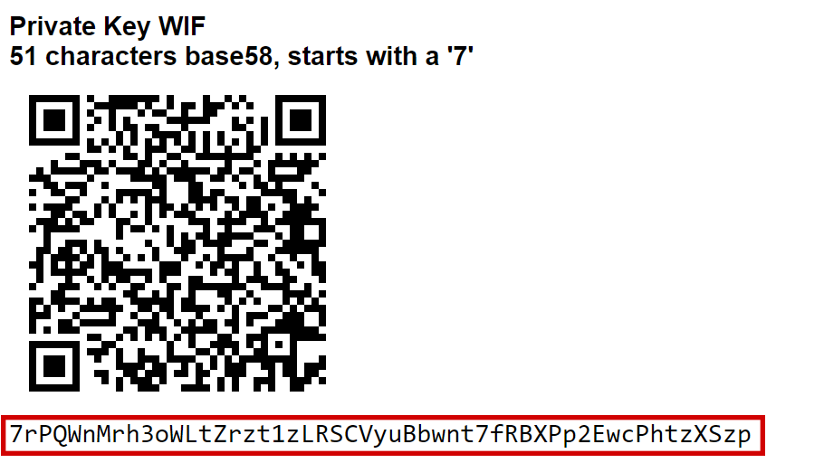{kind=link}
{kind=link}
Decrypting a BIP38 encrypted key to WIF for import in Dash Core wallet
Forgotten Passwords¶
In most cases, if you selected a strong password and have forgotten or lost it, there is practically no hope of recovery. The encryption used by the Dash wallets is extremely strong by design, and a well-chosen password should defeat most brute force cracking attempts. If you can recall some details of the password, particularly its length or sequences of characters that may be included, then brute force password cracking techniques may be worth attempting. Several services exist to do this, or you can attempt it yourself. Because Dash Core is based on Bitcoin Core, most approaches to apply brute force to crack a Bitcoin wallet will also work for Dash wallets.